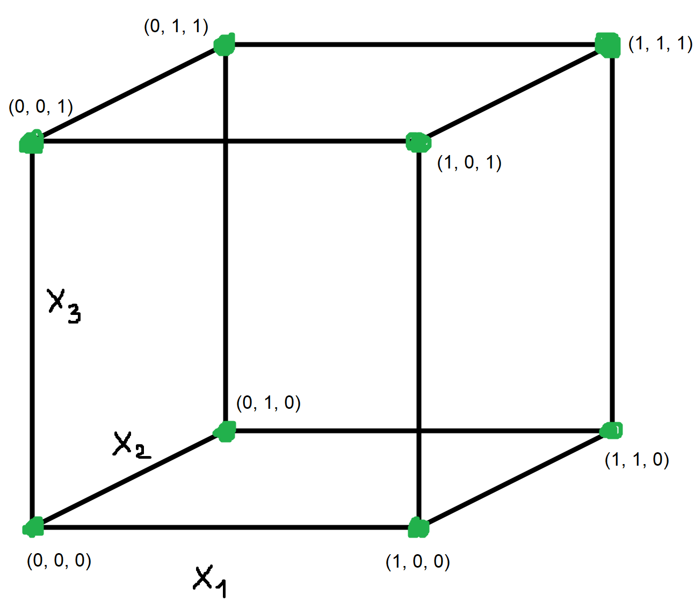
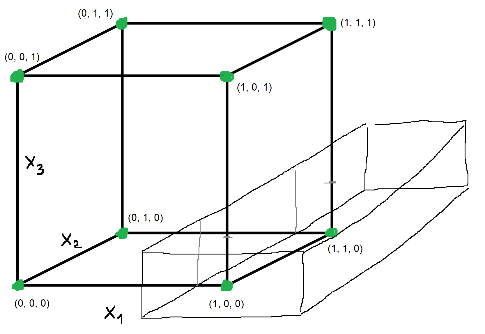

421blazeitfgt
u zadacima kod kojih je prostor primjera konačan, što je kod nas slučaj jer \mathcal{X} = \left\{0, 1\right\}^3 je skup svih uređenih trojki nula ili jedinica i ima ih 8, korisno je vizualizirati kako izgledaju svi mogući primjeri u prostoru primjera.
Zbog toga što se radi o uređenim trojkama, jasno je da svaki primjer \mathbf{x} iz prostora primjera ima tri značajke: \mathbf{x} = \left(x_1, x_2, x_3\right). Svih 8 mogućih primjera iz prostora primjera \mathcal{X} se tada mogu prikazati na ovakvoj kocki:

E sad na slični način treba vizualizirati zadani model. Vidimo da se radi o binarnoj klasifikaciji, jer se koristi funkcija \mathbf{1} \{...\} sa nekim predikatom unutar vitičastih zagrada. E sad vidimo da taj predikat
gleda svaku značajku posebno, i za svaku značajku testira nalazi li se unutar nekog intervala zadanih sa parametrima, i onda sve to poveže sa logičkim I (znak \wedge).
Also mali komentar, nije mi jasno zašto su stavili da je prostor parametara \boldsymbol{\theta} = \mathbb{R}^6 a pojedine jednodimenzijske parametre označili sa dvama indeksima npr \theta_{1,2}, no dobro… Bitno je samo da postoji 6 parametara, i svake dvije su za granice intervala jedne značajke.
Pretpostavimo da su parametri takvi da je interval “ispravan” pod navodnicima (da donje granice nisu veće od gornjih, npr da se ne desi situacija da je \theta_{1,1} = 1.5 i \theta_{1,2} = 0.5), jer u suprotnom će onda takav predikat uvijek dati laž (jer evo za ove dvije thete bi se u predikat našao 1.5 < x_1 < 0.5, što je naravno uvijek laž jer ne postoji nijedan realan broj koji je veći od 1.5 i manji od 0.5) i takva hipoteza onda sve primjere klasificira kao negativne (dakle sa nulama).
E onda u slučaju da su parametri dobri, možemo vizualizirati model na ulaznom prostoru.
Pa ako malo bolje razmisliš, primijetit ćeš da se radi o kvadru koji ima sve bridove i plohe paralelne sa ovom kockom koju sam nacrtao gore na slici.
Evo primjera vizualizacije jedne od hipoteza, nisam baš najvještiji u crtanju 3D oblika:

Ovo bi odgovaralo situaciji npr da su parametri ovakvi (otprilike):
\theta_{1,1} = 0.8 \quad \theta_{1,2} = 1.5 \quad \theta_{2,1} = -0.5 \quad \theta_{2,2} = 1.8 \quad \theta_{3,1} = -0.2 \quad \theta_{3,3} = 0.25
I onda se pozitivno klasificira sve što je unutar takvog kvadra. Ovakva hipoteza koju sam naveo kao primjer bi onda pozitivno klasificirala (1, 0, 0) i (1, 1, 0). Strane i bridovi tog kvadra su paralelne sa onima iz kocke jer se testira svaka značajka pojedinačno. Jako bitno je za primijetiti da iako postoji neprebrojivo beskonačno mnogo parametara iz \mathbb{R}^6, hipoteza postoji konačno mnogo (čak i bez ovakvog modela) jer puno različitih realnih brojeva daju efektivno iste hipoteze. Npr, ova hipoteza koju sam naveo bi bila ista kao i ona sa parametrima:
\theta_{1,1} = 0.81 \quad \theta_{1,2} = 1.51 \quad \theta_{2,1} = -0.51 \quad \theta_{2,2} = 1.81 \quad \theta_{3,1} = -0.21 \quad \theta_{3,3} = 0.26
Što je mrvicu pomaknuti kvadar u odnosu na prošli primjer.
Zašto je ista? Hipoteza je u matematičkom smislu funkcija, i ona za svaki \mathbf{x} iz prostora primjera \mathcal{X} pljuje oznaku. Pa ako dvije hipoteze za svaki \mathbf{x} daju istu oznaku, onda su te dvije hipoteze iste i onda ih ne brojimo dvaput kod prebrojavanja hipoteza. Razlog tomu je činjenica da je prostor primjera \mathcal{X} konačan, pa onda postoji konačno mnogo klasifikacijskih funkcija (hipoteza) i bez modela, a model ih još ograniči s obzirom da nije moguće postići sve moguće hipoteze.
Dobro vizualizirali smo model (odnosno hipoteze iz tog modela) i sad treba prebrojiti koliko različitih klasifikacija postoji za takav model, odnosno koliko različitih funkcija (Booleovih funkcija u ovom slučaju jer imamo binarnu klasifikaciju) se može dobiti ovakvim modelom.
E sad vizualizacija je dobra jer možemo problem svesti na sljedeći ekvivalentan problem:
Koliko ima različitih “konfiguracija” preklapanja kocke i kvadra, gdje se naravno vrhovi kocke (primjeri iz \mathcal{X}) razlikuju?
A ovo prebrojiti je relativno lagano jer znamo da kvadar ima bridove i plohe paralelne sa onima od kocke.
Prva dva slučaja su kad se svi primjeri klasificiraju isto. Ako kvadar skroz “fula” kocku (ili su parametri “neispravni” kako smo spomenuli ranije), onda će svi primjeri biti klasificirani kao 0, a ako se kocka nalazi potpuno unutar kvadra, onda se svi primjeri klasificiraju kao 1. To su 2 hipoteze.
Onda uzmimo slučaj kako kvadar u svojoj unutrašnjosti obuhvaća samo jedan vrh. Sad ovisno o tome koji vrh obuhvati, taj primjer će klasificirati sa 1, a ostale sa 0. Takvih mogućnosti imamo 8 jer ima 8 različitih vrhova, dakle to je dodatnih 8 hipoteza.
Onda uzmimo slučaj kako kvadar u svojoj unutrašnjosti obuhvaća jedan brid. Pokazni primjer je jedan od takvih hipoteza. Taj brid koji obuhvaća ta 2 vrha/ulaznih primjera će klasificirati sa 1, ostale sa 0. Bridova ima 12, dakle takvih mogućnosti ima dodatnih 12, dakle dodatnih 12 hipoteza.
Dalje pretpostavljam kužiš kako.
Onda uzmimo slučaj kako kvadar u svojoj unutrašnosti obuhvaća cijelu jednu stranu. Strana ima 6, dakle 6 dodatnih hipoteza.
Pozbrojimo sve to,
1+1+8+12+6 = 28.